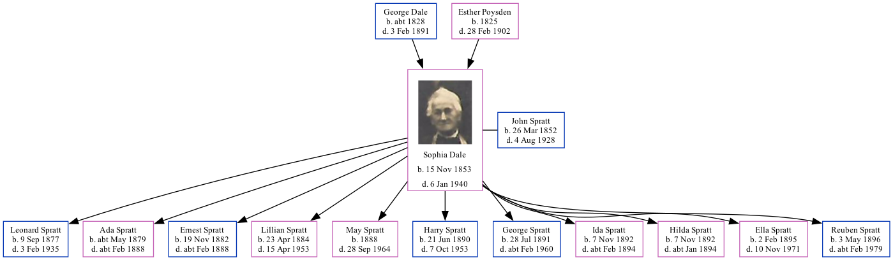

Sophia Spratt (née Dale) 1853 - 1940
[ Home ] | [ Calendar ] | [ Surnames Index ] | [ Family History ]The daughter of George Dale (an agricultural laborer) and Esther Poysden (a servant), Sophia Dale, the great-grandmother of Nigel Horne, was born in Chartham, Kent, England on Nov 15, 18531,2,3,4,5,6,7, was baptized there at St Mary's Church on Jan 1, 1854 and also married John Spratt (an agricultural laborer with whom she had 11 children: Leonard, Ada, Ernest, Lillian, May, Harry Dale, George Dale, Ida, Hilda, Ella and Reuben) there at St Mary's Church, on Nov 9, 187610 (Rev Randolph, St Marys).
Sophia spent all of her life in Kent, England. Throughout her life, she lived in several places around the county: in Chartham Hatch, Kent, England on Apr 7, 186111; at Tonford Farm, Thanington in 18712; at The Street, St Nicholas-at-Wade on Apr 3, 188112; at Shuart Cottage, Podden Street, St Nicholas-at-Wade on Apr 5, 189113; on 2 Nash Court Cottage, Nash Road, Margate on Mar 31, 190114 and on Apr 2, 191115; at Nash Court Farm Cottage, Margate on Jun 19, 192117; and at Way Cottages, Minster, Thanet on Sep 29, 193916, when she was living with her daughter May following the death of her husband on Aug 4, 1928 which is where she died on Jan 6, 19408,9 (morbus Cordis (i.e. reason unknown - likely heart failure due to old age)).
Parents
- George was born c. 1828
- Esther was born in 1825
Children
- Leonard was born on Sep 9, 1877
- Ada was born c. May 1879
- Ernest was born on Nov 19, 1882
- Lillian was born on Apr 23, 1884
- May was born in 1888
- Harry Dale was born on Jun 21, 1890
- George Dale was born on Jul 28, 1891
- Ida was born on Nov 7, 1892
- Hilda was born on Nov 7, 1892
- Ella was born on Feb 2, 1895
- Reuben was born on May 3, 1896
Citations
- 1861 England Census Online publication - Provo, UT, USA: The Generations Network, Inc., 2005.Original data - Census Returns of England and Wales, 1861. Kew, Surrey, England: The National Archives of the UK (TNA): Public Record Office (PRO), 1861. Data imaged from the National
- 1871 England Census Online publication - Provo, UT, USA: The Generations Network, Inc., 2004.Original data - Census Returns of England and Wales, 1871. Kew, Surrey, England: The National Archives of the UK (TNA): Public Record Office (PRO), 1871. Data imaged from the National
- 1881 England Census Online publication - Provo, UT, USA: The Generations Network, Inc., 2004. 1881 British Isles Census Index provided by The Church of Jesus Christ of Latter-day Saints © Copyright 1999 Intellectual Reserve, Inc. All rights reserved. All use is subject to the
- 1891 England Census Online publication - Provo, UT, USA: The Generations Network, Inc., 2005.Original data - Census Returns of England and Wales, 1891. Kew, Surrey, England: The National Archives of the UK (TNA): Public Record Office (PRO), 1891. Data imaged from The National
- 1901 England Census Online publication - Provo, UT, USA: The Generations Network, Inc., 2005.Original data - Census Returns of England and Wales, 1901. Kew, Surrey, England: The National Archives of the UK (TNA): Public Record Office (PRO), 1901. Data imaged from the National
- 1911 England Census Online publication - Provo, UT, USA: Ancestry.com Operations, Inc., 2011.Original data - Census Returns of England and Wales, 1911. Kew, Surrey, England: The National Archives of the UK (TNA), 1911. Data imaged from the National Archives, London, England.
- England & Wales, FreeBMD Birth Index, 1837-1915 Online publication - Provo, UT, USA: The Generations Network, Inc., 2006.Original data - General Register Office. England and Wales Civil Registration Indexes. London, England: General Register Office. © Crown copyright. Published by permission of the Cont
- England & Wales, Death Index: 1984-2005 Online publication - Provo, UT, USA: The Generations Network, Inc., 2007.Original data - General Register Office. England and Wales Civil Registration Indexes. London, England: General Register Office. © Crown copyright. Published by permission of the Cont
- England & Wales, National Probate Calendar (Index of Wills and Administrations),1861-1941 Online publication - Provo, UT, USA: Ancestry.com Operations Inc, 2010.Original data - Principal Probate Registry. Calendar of the Grants of Probate and Letters of Administration made in the Probate Registries of the High Court of Justice in England. Londo
- England & Wales, FreeBMD Marriage Index: 1837-1915 Online publication - Provo, UT, USA: The Generations Network, Inc., 2006.Original data - General Register Office. England and Wales Civil Registration Indexes. London, England: General Register Office. © Crown copyright. Published by permission of the Cont
- 1861 England, Wales & Scotland Census - Findmypast (was age 7 and the daughter of the head of the household)
- 1881 England, Wales & Scotland Census - Findmypast (was age 28 and the wife of the head of the household)
- 1891 England, Wales & Scotland Census - Findmypast (was age 37 and the wife of the head of the household)
- 1901 England, Wales & Scotland Census - Findmypast (was age 47 and the wife of the head of the household)
- 1911 Census for England & Wales - Findmypast (was age 58 and the wife of the head of the household)
- 1939 Register - Findmypast (was recorded at this address)
- 1921 Census Of England & Wales - Findmypast (was age 67 and the wife of the head of the household)
Notes
Mum tells me that Sophia Dale used to enjoy playing cards, but only Dad would play with her. She was taken by Isaac Horne (her son-in-law, my grandfather) to his house from time-to-time by motorbike and sidecar.
Media
John Spratt - Sophia Dale - marriage cert
Sophia Dale - Birth Certificate
Sophia Dale - death certificate
Sophia Dale - Probate
spratt-dale golden wedding
1891 UK Census

1861 UK Census

1871 UK Census

1881 UK Census

1911 UK Census - page 1
1911 UK Census - page 2

1901 UK Census

Spratt Family Photograph

Sophia Dale
England & Wales births 1837-2006 - BMD/B/1853/4/AZ/000231/018
England & Wales deaths 1837-2007 - BMD/D/1940/1/AZ/001358/003
Canterbury Marriages - GBPRS/CANT/M/97244494/2
England Marriages 1538-1973 - R_848405105/2
England & Wales marriages 1837-2008 - BMD/M/1876/4/AZ/000077/248
1939 Register Transcription - TNA-R39-1820-1820H-015-06
1939 Register Transcription - TNA-R39-1820-1820H-015-08
1939 Register Transcription - TNA-R39-1820-1820H-015-09
1861 England, Wales & Scotland Census - GBC/1861/0003417884
1911 Census for England & Wales - GBC/1911/RG14/04484/0189/2
1939 Register Transcription - TNA-R39-1820-1820H-015-07
England Births & Baptisms 1538-1975 - R_885422732
England Births & Baptisms 1538-1975 - R_938199188
Kent Baptisms - GBPRS/CANT/B/96193112
Kent marriages and banns - GBPRS/CANT/M/94078358/2
1921 Census of England & Wales - GBC/1921/RG15/04434/0087/02
Family Tree
Generated by Ged2Site. Last updated on Jul 20, 2025